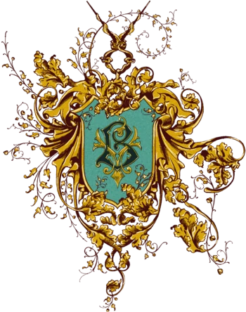
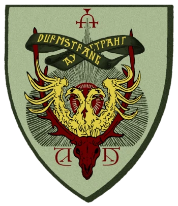

Other schools
Beauxbatons Magical Academy
Beauxbatons Magic Academy (French: Académie de Magie Beauxbâtons) [a-ka-de-MÍ de ma-SHÍ bo-ba-TÓN] is a school of magic located in the Beauxbatons Palace in the Pyrenees in the south of France; the current director is Madame Olympe Maxime. Beauxbatons accepts students from France, Spain, Portugal, Luxembourg, Belgium and the Netherlands; and students take their T.I.M.O. level exams after six years of study instead of five. The school's coat of arms is composed of two golden wands crossed one over the other, each throwing three stars.
History
Founded sometime before the 1290s, Beauxbatons has had many notable students over the years. The most prominent are Nicolas Flamel, the alchemist famous for discovering the Philosopher's Stone, and his wife Perenelle. In addition to the Flamels, Beauxbatons alumni include the Flamels. In addition to the Flamels, Beauxbatons alumni include Vincent Duc de Trefle-Picques, who escaped The Terror by casting a camouflage charm on his neck and pretending his head had already been cut off; Luc Millefeuille, the famous pastry chef and Muggle; and Fleur Delacour, who fought in the world-famous Battle of Hogwarts, married Bill Weasley, and received medals of bravery from the French and British Ministries of Magic. Olympe Maxime, headmistress in the mid-1990s, was (despite her protestations to the contrary) a demigirl; intelligent, elegant and undeniably impressive. Beauxbatons participated in the Triwizard Tournament held in 1792 and in the tournament held in 1994. During the 1792 tournament, one of the tasks was to catch a basilisk. However, the beast became enraged and injured three of the judges, one of the injured being the headmaster of Beauxbatons at the time. In the 1994 tournament, Fleur was selected as the school champion and finished in fourth place behind the other three participants. During the 1994 tournament, Madame Maxime was the headmistress of the academy.
Castle and grounds
Beauxbatons Palace is a beautiful castle surrounded by majestic gardens and fountains magically created out of the mountainous landscape, and has stood for over 700 years[1]. In the dining hall, wooden nymphs serenade students as they eat, and at Christmas the hall is adorned with large, glittering ice sculptures that do not melt.[7] It is said that the impressive castle and the castle's impressive castle and fountains are the most impressive in the world. It is said that the impressive castle and grounds of this prestigious school were partly financed with alchemist's gold, as Nicolas and Perenelle Flamel met at Beauxbatons in their youth. A magnificent fountain in the centre of the school's park, believed to have healing and beautifying powers, bears his name.
Reputation and rivalry
Education at Beauxbatons Academy was of a similar calibre to education at Hogwarts School in Scotland. Beauxbatons students take their equivalent of an Indispensable Degree in Ordinary Magic in their sixth year, rather than their fifth like their Hogwarts counterparts. Beauxbatons Academy has generally enjoyed a very warm and cordial relationship with Hogwarts School, as even during the Triwizard Tournament the two schools have enjoyed a healthy rather than bitter rivalry; Beauxbatons has won the Tournament sixty-two times and Hogwarts has won sixty-three. In the last of these tournaments, Beauxbatons has won the tournament sixty-two times and Hogwarts has won sixty-three times. In the last of these tournaments in 1994-1995, the Tournament was successfully reinstated. Their relationship with Hogwarts at this tournament was strained due to Lord Voldemort's vassal placing Harry Potter's name on the Goblet of Fire and giving Hogwarts a second champion, although he said the relationship did not turn hostile (as individual students from Hogwarts and Beauxbatons remained friendly with each other and some even attended each other's Yule Ball). However, Madame Maxime returned to Hogwarts for Albus Dumbledore's funeral, demonstrating that the cordial relationship continued between the schools.
Uniform
The students wear pale blue robes made of fine silk. The students wear pale blue robes made of fine silk.
Durmstrang Institute
Durmstrang Institute (Cyrillic: Дурмстранг) is a magical school in Scandinavia that is notorious for teaching the Dark Arts. It is located in the northernmost regions of Norway or Sweden. Durmstrang, however, teaches students from as far away as Bulgaria. Durmstrang was one of three schools that competed in the Triwizard Tournament in the 1994-1995 school year. It is an ancient school, having existed since at least 1294. Students wear fur cloaks as part of their school uniform, as well as fur hats and blood-red robes. Durmstrang does not admit Muggle-borns. However, it is shown that students may not necessarily share this idea, as Viktor Krum attended the Yule Ball with Hermione Granger, who is Muggle-born and would not have been admitted to his school. In the films, Durmstrang is said to be an all-male school, although in the books, people of both genders are seen entering Hogwarts Castle as representatives of their school.
History
Durmstrang was founded sometime during the Middle Ages by the great medieval witch Nerida Vulchanova who served as the school's first headmistress, followed after her mysterious disappearance by Professor Harfang Munter who established Durmstrang's reputation for emphasising martial magic as an impressive part of its curriculum. In 1294 the Triwizard Tournament was established as a friendly competition between Durmstrang Institute, Hogwarts School of Witchcraft and Wizardry and Beauxbatons Academy of Magic. But in 1792 a basilisk got out of control and injured the heads of all the schools. The Triwizard Tournament was then suspended indefinitely, but was resumed in 1994. In 1894, Gellert Grindelwald was accepted into Durmstrang Institute. Although the school was geared towards the Dark Arts, Grindelwald's experiments in dark magic were deemed too dangerous for the students. After a certain amount of time, even Durmstrang could no longer ignore Grindelwald's dangerous studies, and expelled him. Before he was expelled he carved the mark of the Deathly Hallows into a wall of the school, which remained there long after his defeat. Sometime after 1981, Igor Karkarov was elevated to the position of headmaster of Durmstrang and was immensely unpopular in that position and as a result several students were removed from the school by their parents due to his cruelty. During his time as headmaster, some students copied Grindelwald's symbol on their books and bags to impress others, but were "taught a lesson" (presumably in the form of retribution) by those who lost family members to Grindelwald.
Location
Durmstrang, like Hogwarts School of Witchcraft and Wizardry, has a castle, although its castle is not as big as Hogwarts. The castle is only four storeys high and the fireplaces are only lit for magical purposes. It has very large gardens. In addition, the school is untraceable; Durmstrang, like other schools, likes to hide its whereabouts so that other schools cannot steal its secrets. Its arrival by boat implies that Durmstrang is somewhere on the beach, on a river or main lake.
Reputation
Durmstrang is notorious for its acceptance of the Dark Arts, and was known to have educated (and later expelled) Gellert Grindelwald before his rise as a dark wizard. The former headmaster, Professor Igor Karkarov, was in the service of Lord Voldemort as a Death Eater, but managed to escape punishment in Azkaban by providing the Ministry of Magic with the names of his accomplices. Lucius Malfoy, another Death Eater, considered sending his son Draco to Durmstrang, but his mother did not like the idea of her son studying so far away.
Curiosity
The place bears a strong resemblance to Azkaban Prison, both are located on the water, at the top of what looks like a waterfall.